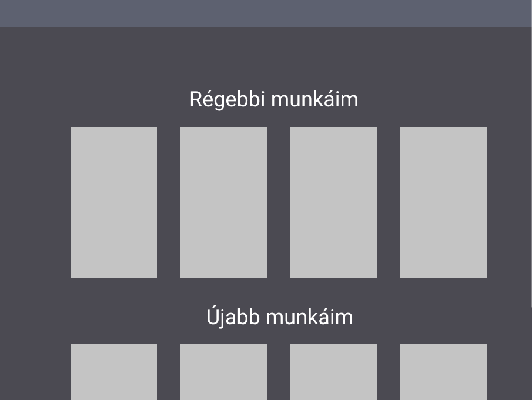

Az oldal megalkotása során, és annak színkombinációjában sok inspirációt adott a Facebook, Instagram vagy Youtube "dark mode"-jai, mert én mindegyiket napi szinten abban használom. Persze nem állt szándékomban lemásolni azok színkódját, így sajátot állítottam össze.

Sajnos az eredeti tervekhez képest el kellett térnem, mert nem tudtam megoldani, hogy a navigációs gombok oldalról ússzanak be, továbbá azt sem, hogy azok háttere a lap teljes magasságában ott legyen. Továbbá a Főoldalon az önarcképemet eredetileg kör formában akartam beilleszteni, de sajnos nagyon hosszúkás volt a kép, és photoshop tudás híján valamint nagyon alap weboldal programozási ismeretekkel ezt sem tudtam kivitelezni.

A feladat nagyon jó motiváció volt arra, hogy bele ássam magam a weboldal programozásba, amit már rég óta ki akartam próbálni. Én nagyon élveztem az egész folyamatot minden nehézségével együtt és valószínű, hogy ezt a tudást még sokszor fogom tudni hasznosítani.
Az oldal elkészítéséhez segítségemre volt a W3schools.com és a Youtube.com